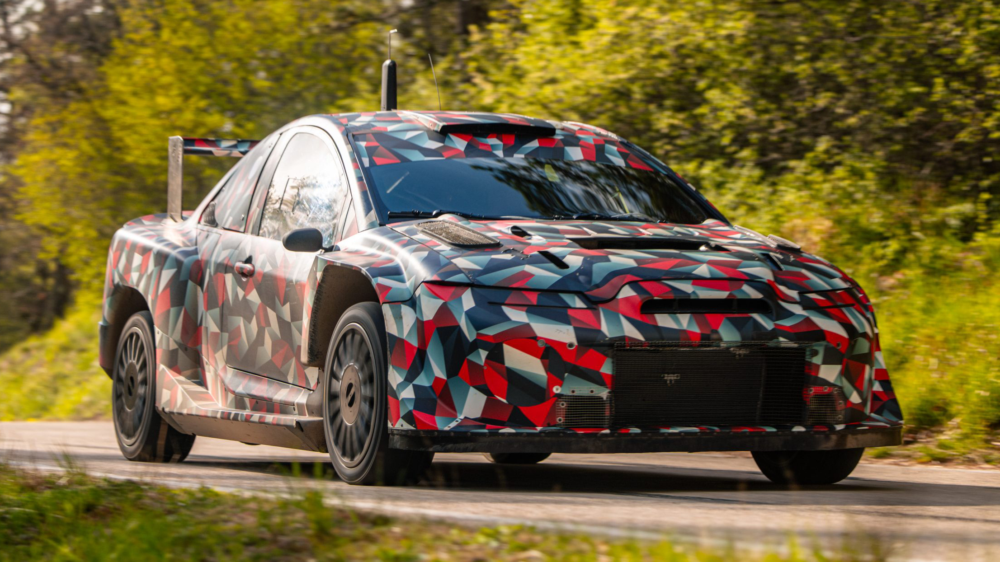

Toyota Racing / Gazoo Racing
Estará com duas equipas de fábrica: a Toyota Racing com o GR Celica Rally1 e a Gazoo Racing com o GR Yaris Rally1.
M-Sport WRT

A equipa britânica estará com o Ford Fiesta Rally2 Kit.
Project Rally One

A equipa belga terá um protótipo Rally1 WRC 27 próprio, com carroçaria inspirada no Porsche Macan, que está a ser testado pelo ex-piloto do WRC da Citroën, Stéphane Lefebvre. Pelo menos na temporada de estreia, fará somente as etapas de asfalto, e o chefe da equipa diz que almeja ter Loeb e Ogier como pilotos.
Rally 1 Spain WRT
A equipa local estará com um protótipo Rally1 WRC 27 próprio, que conta com apoio da Federação Espanhola de Automobilismo. Há rumores de contactos com Dani Sordo para ser um dos pilotos, e marcas como Hyundai, Cupra ou até Mitsubishi podem servir de base para a carroçaria do novo Rally1.
Teo Martín Motorsport
Estará com dois Toyota GR Celica Rally1; a equipa espanhola será cliente da marca japonesa.
Ford Racing WRT
A marca norte-americana regressa ao WRC oficialmente em 2028 — ausente desde 2012 — em parceria com a M-Sport WRT (como já aconteceu no passado no WRC e como ocorre atualmente no Dakar Rally e no W2RC). Entrará inicialmente em 2028 com o Fiesta Rally2 Kit e, em 2029, com um Rally1 baseado num hatchback ou SUV do mercado europeu.
Rumores
Hyundai
A marca sul-coreana anunciou que o seu programa oficial será focado apenas no WRC2 entre 2027 e 2029. A única possibilidade na categoria principal será com a flexibilização no regulamento Rally2 Kit WRC 27 para o i20 N Rally2 — rumores que ganham força com os testes do seu Rally2 na Finlândia e em Portugal.
Lancia
A única possibilidade passa pela flexibilização no regulamento Rally2 Kit WRC 27 com o Ypsilon Rally2 HF Integrale. Após testes recentes com o Rally2 Kit feitos no sul de França, a marca foi confirmada de forma semi-oficial com a equipa PH-Sport e o Rally2 Kit, com estreia prevista em Monte Carlo.
Škoda
A única possibilidade depende da flexibilização no regulamento Rally2 Kit WRC 27 com o Fabia RS Rally2.
Marcas Chinesas (ou controladas por grupos chineses)
Possível interesse envolvendo fabricantes como GWM, Geely, Lynk & Co, MG e Volvo.
BYD / Prodrive
A equipa britânica esteve em conversações com a FIA e com o promotor do WRC, existindo rumores de uma parceria com a marca chinesa BYD.